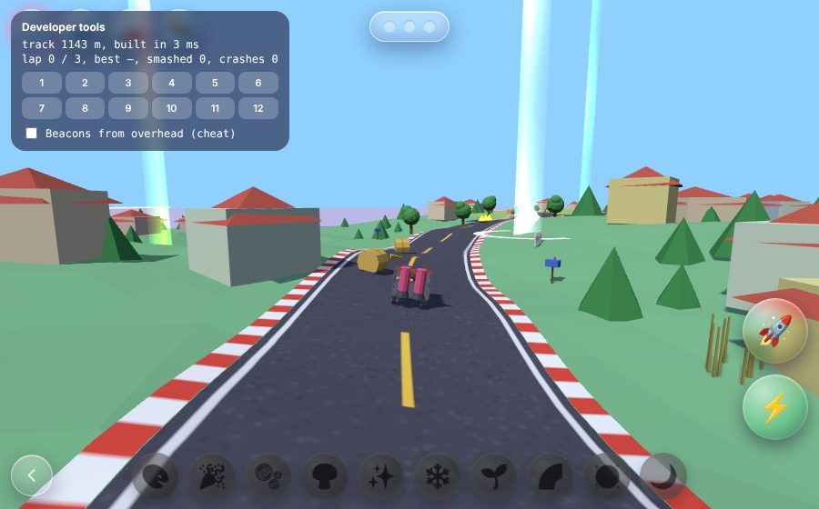
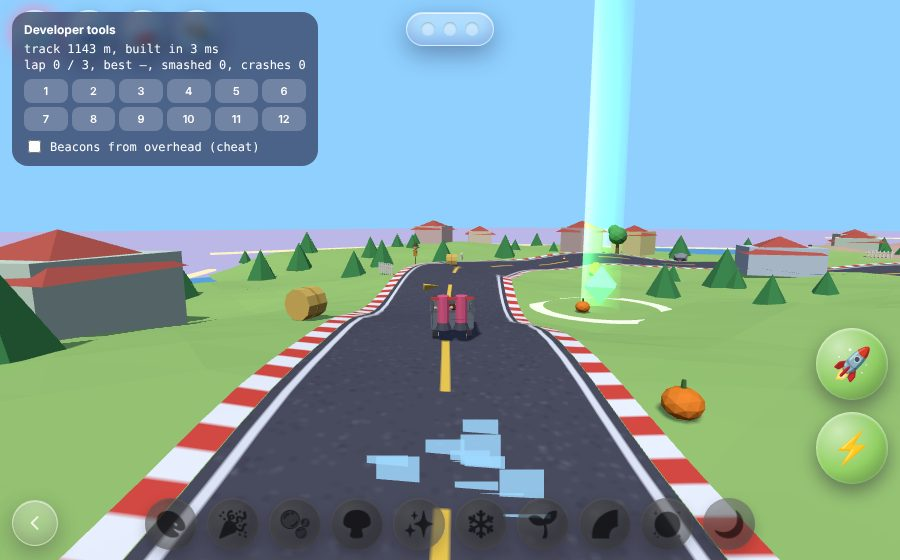
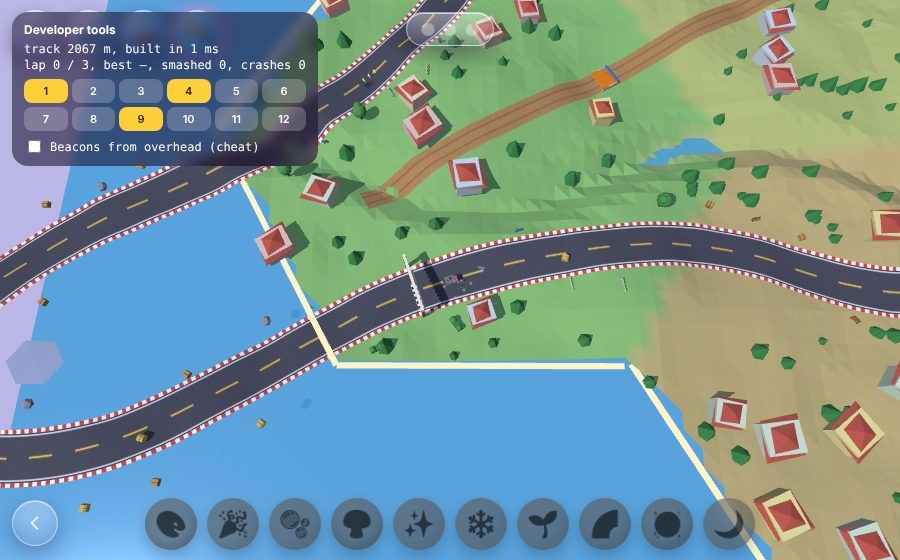

AW-STUDY-0058 · Round 1
Kart Mode: the Racetrack
The board turns into a racetrack. The six outer tiles make a looping road, the middle tile becomes a dirt shortcut, and every tile you place in a slot adds a bulge or a hairpin. The track is rebuilt quietly in the background, so you keep driving until the new one is ready.
Drive itWorkbench (place tiles)What it looks like



How it plays
- Soft scenery (cones, crates, fences, hay, mailboxes) bursts when you hit it fast; hard scenery (trees, benches, parked cars, the fountain) bounces you and costs speed.
- Orange ramps launch you, yellow chevron pads boost you, puddles slow you, grass tops out at about 70% speed.
- Three laps; the shortcut through the square counts. Three pips are the only thing on screen.
- Halos and laser beacons are only earned from the car, as in the Effect Hunt; the overhead cheat sits in the workbench.
Open
Drift turbo, a countdown, rivals, bridges over water, mounting in the real town (it needs to clear houses on the road line), real vehicle art. Details in docs/oracle/kart/KART_STUDY.md. Tour: no for this page, yes once it runs in the town.